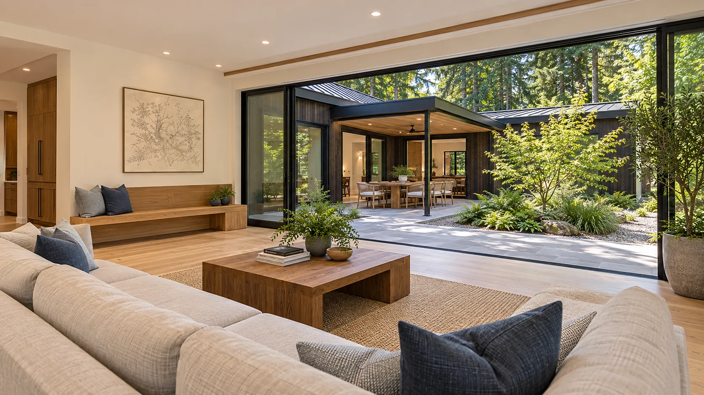

01 / Custom homesAsk about this service
Custom Home Building
Stillwater builds one-of-a-kind homes on your land, from a single-level house on a flat lot to a three-story home stepped down a waterfront bluff. We work with your architect, or introduce you to one we trust, and manage the trades from the foundation to the final walkthrough.
Helpful to have ready
Your survey or plot plan, any drawings or sketches, and photos of homes you like.
What we’ll go over
Well or water hookup, septic or sewer, power to the site, tree removal, driveway access, and what it will take to get the lot ready before the house goes up.